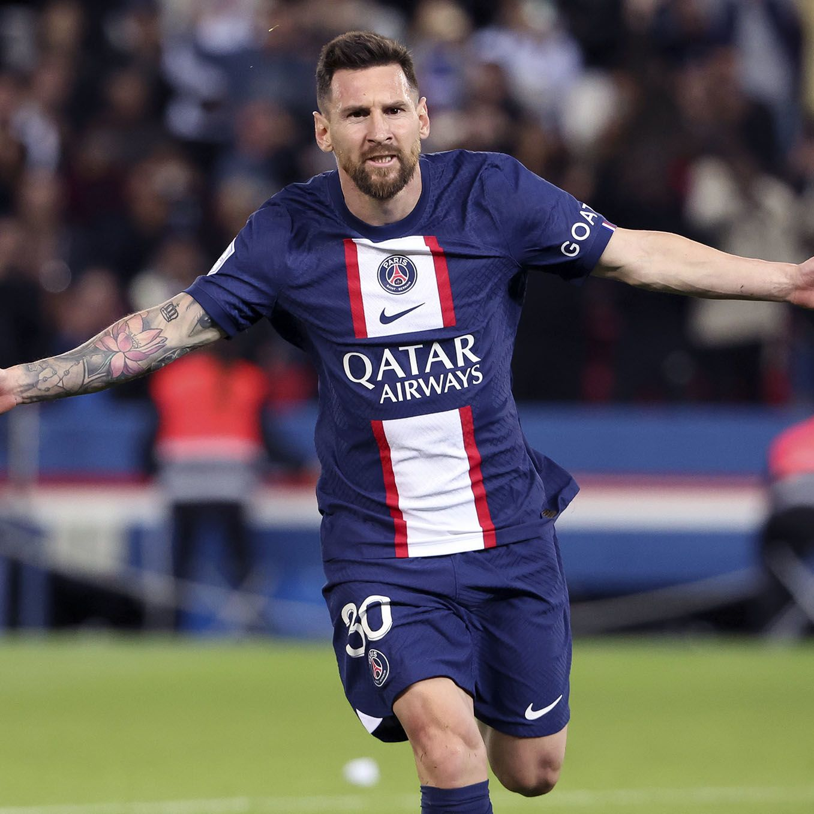
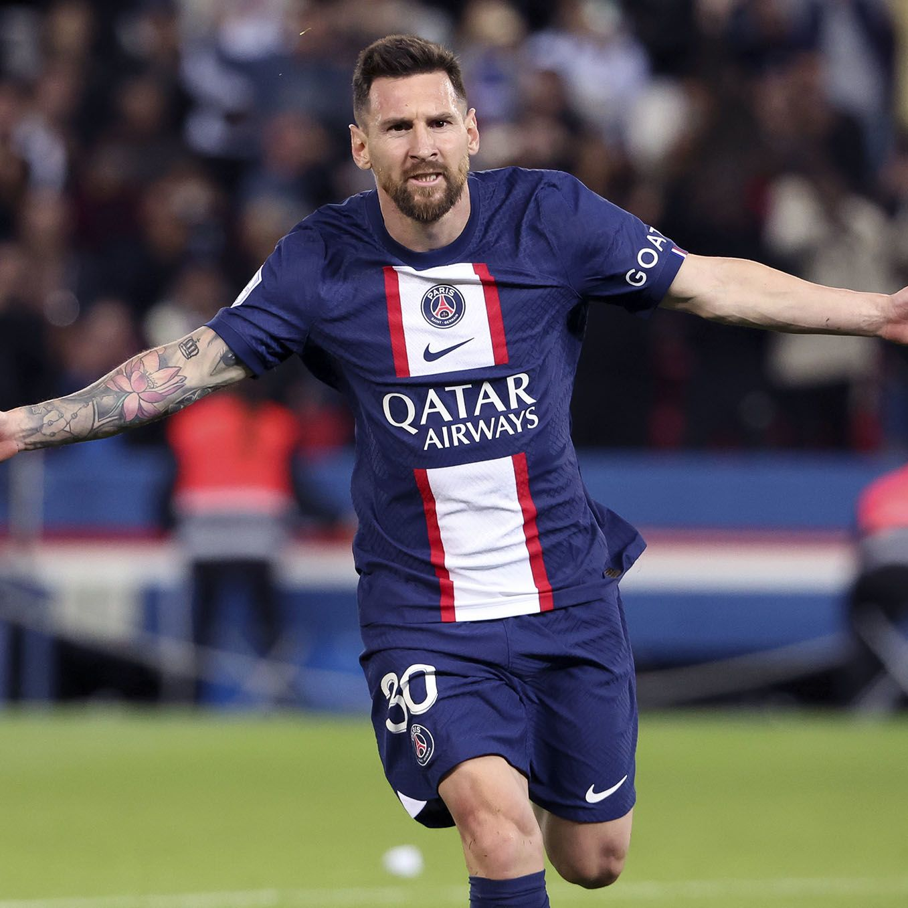
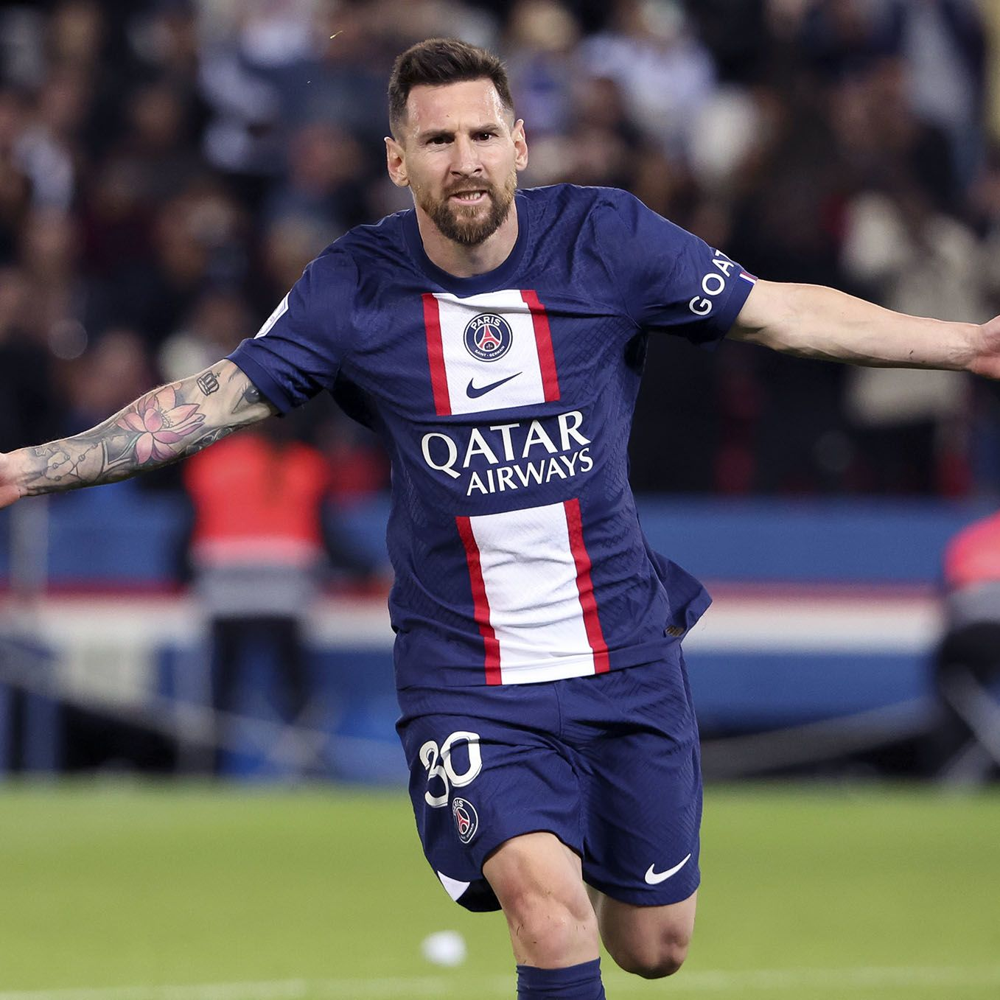

MESSI
From the land I'm living on to the God who's beyond the sky, Messi's the GOAT and here's why!!!
 
 From the land I'm living on to the God who's beyond the sky, Messi's the GOAT and here's why!!!
 Messi has achieved many great things in his career with Barca, taking it as an example that he had achieved the number of 4 total champions league titles and having more trophies (40) than other big teams with great history in the past decade and a half.
But not only did he accomplish things in the green pitch only, he also did manage somehow to accomplish many great things in his personal life.
We can take his mairrage and marrying his dream girl since the Argentine was a young boy in Rosario, Angelina as an example because ever since they were young, there was some sort of a very firm bond between them both, and ever since Messi was 9, and she was 10, they haven't seen each other.
But now, they are married and now they have 3 kids.
Here's a video to learn more about Lionel Andres Messi's background and career!!!
.jpeg)